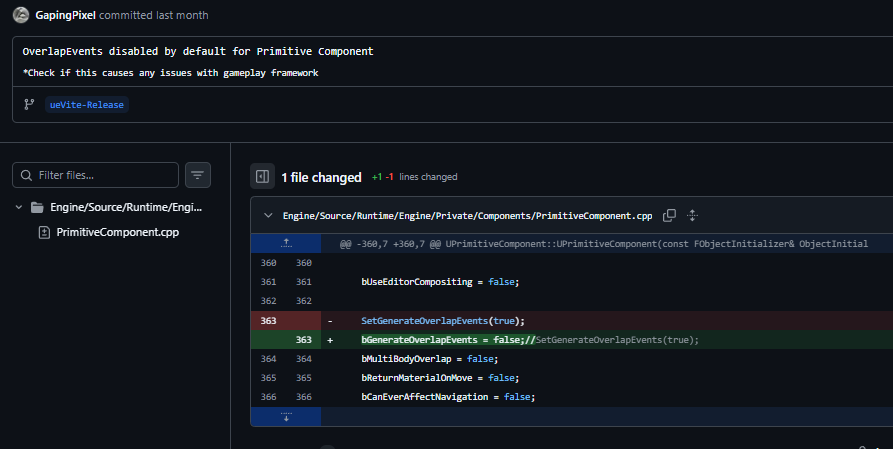
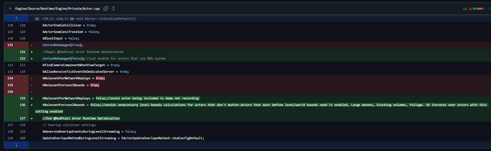
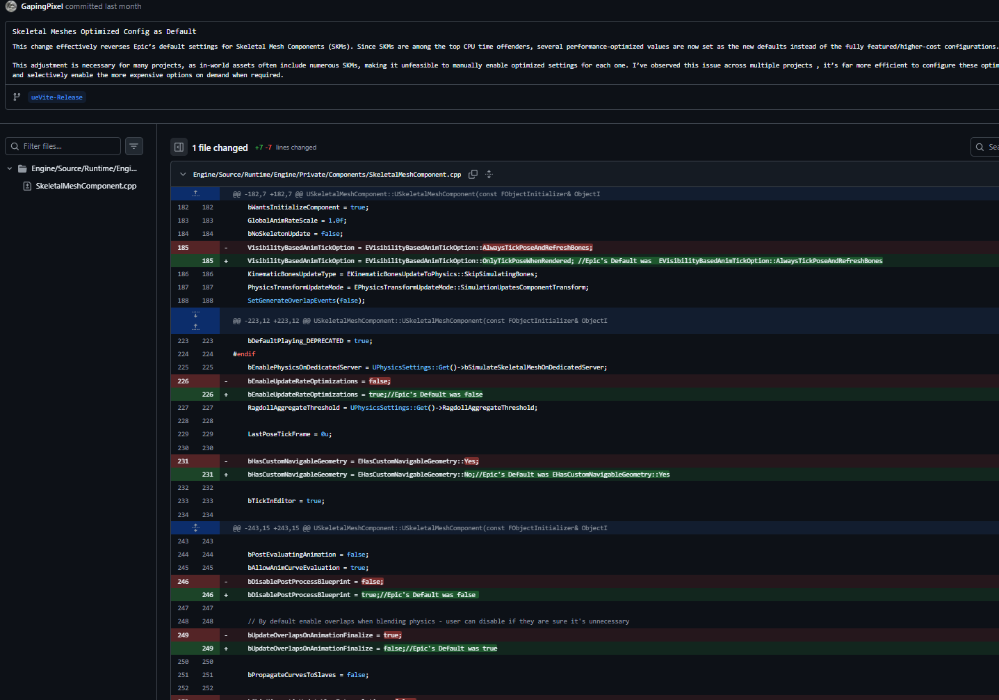
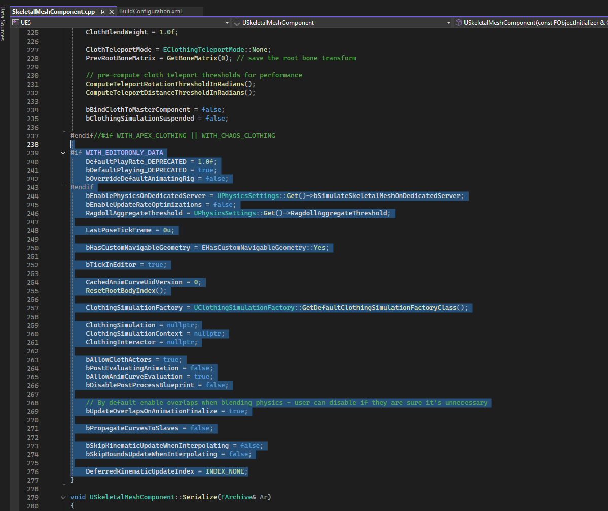
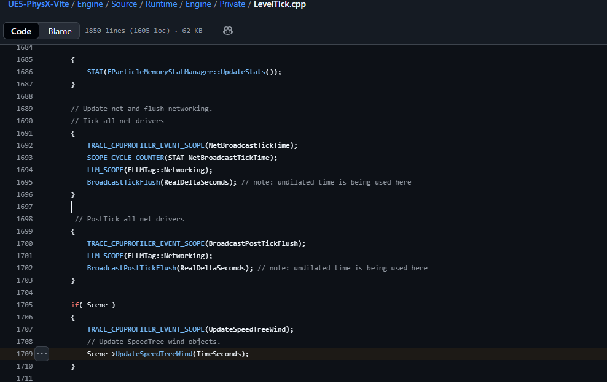

引擎默认更改
为了提升性能，Vite 修改了虚幻引擎 4.27 的一些默认设置。这些修改会直接影响您的项目——其中一些会改变运行时行为，而不仅仅是成本。在断定项目出现问题之前，请先阅读此页面。
虚幻引擎的默认设置旨在确保所有功能开箱即用，这意味着它们启用了大多数项目永远不会用到的功能。Vite 修改了其中一些设置以提升性能，其原则是：您需要的功能应该是您主动开启的，而不是您忘记关闭的。
但代价是，从虚幻引擎 4.27 迁移到 Vite 的项目可能会出现不同的行为。此页面列出了所有变更。
运行时行为变更
警告： 这些更改不仅会改变性能，还会改变行为。如果游戏逻辑依赖于默认设置，则需要进行调整。
默认情况下禁用重叠事件
除非显式启用，否则基本组件不再生成重叠事件。
生成重叠事件会消耗所有组件的资源，无论是否有任何组件绑定到该事件。在默认项目中，大多数基本组件生成的重叠事件都没有被任何组件监听。
这意味着：需要重叠事件的组件必须显式设置生成重叠事件。触发器体积、拾取检测以及任何由 OnComponentBeginOverlap 驱动的组件都需要设置此标志。这很可能是项目迁移后“我的触发器停止工作”问题的原因。

提交差异：将 PrimitiveComponent.cpp 中的 SetGenerateOverlapEvents(true) 替换为 bGenerateOverlapEvents = false，应用于每个项目中的每个基本组件。
优化 Actor 运行时
Actor 运行时默认值已更改，以减少 AActor::InitializeDefaults 中每个 Actor 的开销：
| 默认 | 库存的 4.27 | Vite | 原因 |
|---|---|---|---|
SetCanBeDamaged |
true |
false |
仅使用伤害系统的参与者需要此设置 |
bRelevantForNetworkReplays |
true |
false |
除非需要，否则将参与者排除在演示网络录制之外 |
bRelevantForLevelBounds |
true |
false |
避免对未定义边界的参与者进行边界迭代 |

提交 Actor.cpp 中的差异：更改 SetCanBeDamaged、bRelevantForNetworkReplays 和 bRelevantForLevelBounds 的默认值。大型网格、阻挡体积和必须定义世界边界的植被需要将 bRelevantForLevelBounds 设置为 true。
骨骼网格体优化配置
骨骼网格体是大多数项目中 CPU 占用率最高的组件之一，因此 USkeletalMeshComponent 默认提供的是性能优化配置，而非 Epic 提供的完整功能配置。游戏内资源通常包含大量骨骼网格体，因此为每个组件启用优化设置并不实际；可行的做法是将性能较低的配置设为默认，并在需要时启用性能较高的配置。
| 默认 | 库存的 4.27 | Vite |
|---|---|---|
VisibilityBasedAnimTickOption |
AlwaysTickPoseAndRefreshBones |
OnlyTickPoseWhenRendered |
bEnableUpdateRateOptimizations |
false |
true |
bHasCustomNavigableGeometry |
Yes |
No |
bDisablePostProcessBlueprint |
false |
true |
bUpdateOverlapsOnAnimationFinalize |
true |
false |

SkeletalMeshComponent.cpp 中的提交差异显示了与 Epic 原版相比的五个已更改的默认值。每行更改的内容都会在末尾的注释中保留 Epic 的原始值，因此无需咨询上游即可恢复库存行为。
VisibilityBasedAnimTickOption 是需要关注的选项。OnlyTickPoseWhenRendered 表示屏幕外的参与者将完全停止评估其姿势；读取未渲染参与者骨骼变换或插槽的游戏玩法（例如武器枪口位置、IK 目标、远处参与者上的连接点）必须将组件设置回 AlwaysTickPose 或 AlwaysTickPoseAndRefreshBones。
bDisablePostProcessBlueprint = true 是第二个选项：后处理动画蓝图（通常用于 IK 和骨骼校正）将不再运行，除非为每个组件重新启用。

SkeletalMeshComponent.cpp 构造函数显示了周围的默认块。有关这些默认值设置位置的上下文，请参阅 SkeletalMeshComponent.cpp 中的构造函数块。
已禁用生成光照贴图 UV
默认情况下，静态网格体导入不再生成光照贴图 UV（提交差异）。
大多数 Vite 项目使用 DDGI 而非烘焙光照，因此为每个导入的网格体生成光照贴图 UV 会浪费导入时间和 UV 通道。如果您的项目使用烘焙光照，请在静态网格体导入选项中启用此设置。
可扩展性
阴影质量 4（Shadow Quality 4）用于中等阴影设置，在可扩展性范围的中间位置提高阴影质量（提交差异）。
已禁用的插件
4.27 版本默认启用的一些插件已被禁用（提交差异 1 · 提交差异 2）。这可以减少编辑器启动时间、模块加载数量和打包后的构建文件大小。
如果您需要使用 VR 插件，则必须重新启用它们。
节拍优化
SpeedTree 节拍
LevelTick.cpp 中的 SpeedTree 节拍已优化。无论项目是否使用 SpeedTree 资源，SpeedTree 节拍都会运行，因此每个项目都能从中节省资源。

LevelTick.cpp 显示了世界节拍中的 UpdateSpeedTreeWind 调用。Scene->UpdateSpeedTreeWind 在世界节拍中 — 无条件地在 stock 4.27 中。
Niagara 节拍
Niagara 插件启用时会发出节拍信号。如果您不使用 Niagara 插件，请在项目关卡中禁用它；Cascade 在 4.27 版本中仍然可用。
光线追踪剔除
光线追踪剔除会考虑每个图元的最小绘制距离（提交差异）：
GEngine->Exec(nullptr, TEXT("r.RayTracing.Culling.UseMinDrawDistance 1"));
对于有很多小细节网格的场景来说，这是一种廉价且通常安全的解决方案，因为几何体太小以至于无法绘制，在加速结构中也太小以至于无关紧要。
编辑器体验优化
这些优化不会影响运行时性能，但会改变编辑器的行为：
- 动画资源始终在新标签页中打开 (提交差异)
- 用于禁用新插件弹出窗口的配置变量 (提交差异)
bDisableAllTutorialAlerts=True(提交差异)- 从更高版本的引擎中安全移植的各种功能 (提交差异)
您可以自行进行一些可选的精简操作
出于兼容性考虑，这些操作无法在分支发布版本中禁用，但可以针对单个项目进行设置。
移除 Vite 插件。 移除已添加的 Vite 插件可以缩短编译时间。在 Ryzen 9 9950X3D 上测试：完整代码库编译耗时 15 分钟，移除 Vite 插件后仅需 12 分钟。Houdini 是最大的单一贡献者。
有关工具，请参阅精简指南。
迁移现有项目
将迁移后的项目与 Vite 默认设置进行比较
-
测试每个触发体积和重叠驱动的交互。重叠事件是最常见的故障点。
-
检查使用引导/跟随骨骼网格设置的角色是否存在曲线传播缺失的情况。
-
如果项目烘焙了光照，请重新启用光照贴图 UV 生成，并确认现有网格仍然具有有效的光照贴图 UV。
-
重新启用项目所需的所有插件，特别是 VR 插件。
-
检查缩放设置，因为中等阴影现在与默认设置有所不同。